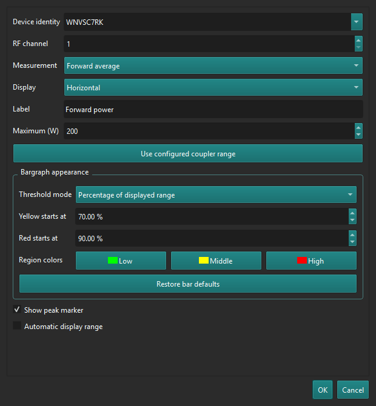
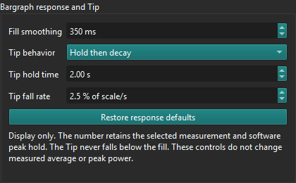

Auto range, peak hold and markers
On this page
- Set a useful display range
- Peak Hold
- Reset a held reading
- Bargraph response and Tip
- Peak marker and colors
Set a useful display range
Right-click a meter and choose Properties. Maximum sets its scale. Choose a range that makes ordinary readings easy to see without repeatedly reaching the top. Where available, Automatic range lets the display expand for larger readings and settle back to a smaller range. It does not change the coupler rating, factory calibration, hardware LCD or SWR protection limit.
Peak Hold
Applicable peak instruments and Combined RF Channel meters offer two modes:
- Off: follow the current peak reading.
- Timed: retain the rolling peak maximum for the selected duration, then allow it to fall. Adjust the duration in 250 ms steps. A short setting around 500 ms is a useful starting point for speech.
Software peak hold affects peak numeric readings and applicable peak meters. It is separate from the bargraph Tip, which can retain its marker with Maximum until reset without freezing the number.
Reset a held reading
Use the instrument's Reset display hold/range action. Forward and reflected holds remain independent where both are shown. Held is a previous high value, not a fresh measurement. Invalid or lost-source conditions remain visible rather than being hidden by the retained peak. The hold preference is saved in the layout. Captured peak history is not restored after restarting the application.
Peak marker and colors
Show peak marker controls the thin marker on a bar or basic analog meter. Turning it off does not turn off peak tracking or change the held numeric value. Set Low/Middle/High colors and thresholds in Properties. Percentage thresholds move with the scale; absolute thresholds stay at the entered values. These are visual zones, not alarm settings.

Meter behavior is configured in ordinary Properties; Edit Layout is needed only for geometry. Select image to enlarge.

Bargraph response and Tip
For a standalone horizontal or vertical RF power bar, right-click the instrument, choose Properties, and find Bargraph response and Tip. These choices belong to this instrument and are saved with its layout. They do not change WN-2 average power, reported peak power, SWR, protection, recorded history or published readings. Combined RF Channel and cross-needle meters keep their existing behavior.
Fill smoothing starts at 350 ms. Choose Off for live fill without smoothing. Saved values remain as you set them. For speech, start with 350 ms; use a shorter time for a faster response or a longer time for a steadier fill. The setting is a response time, not an average-power measurement period: a step covers about 63% of its change in one response time. Only the fill is smoothed. The number still shows the selected measurement, including any separately configured software peak hold. The fill and number can therefore differ while power is changing. Zero power clears the fill promptly.
The Tip is the narrow colored marker. It is not an extra average-power reading. Its hold history follows the selected measurement separately from fill smoothing. In every mode, the visible Tip stays at or above the colored fill. If a falling fill temporarily exceeds the selected reading, the Tip sits at the fill edge until its own reading or held value is higher. This display floor does not change the number or create a retained peak:
- Follow reading (default) places the marker at the selected reading. With smoothing enabled, this helps compare the live number with the slower fill.
- Hold then decay retains a new high reading for Tip hold time, then lowers the marker at Tip fall rate, expressed as a percentage of full scale per second. The defaults are 2 seconds and 2.5% per second. A new equal or higher reading restarts the hold. The marker never falls below the selected reading or the visible fill.
- Maximum until reset keeps the highest selected reading observed since reset. It can move upward for a new high. This retains only the marker; it does not freeze the number or the fill.
The hold modes keep their marker through zero-power speech gaps. Invalid, stale or disconnected data clears their history; reconnection starts fresh. Changing source, calibration or Properties and restarting the app also starts fresh. Use Reset display hold/range to clear both the Tip and other display histories. Turning Show peak marker off hides the Tip while tracking continues.

Response and Tip controls in instrument Properties. Select image to enlarge.

SSB example: place forward-average and forward-peak bars side by side. First compare them with smoothing Off. Then try 350 ms fill smoothing on the average bar, with Follow reading or Hold then decay for its Tip. Keep the peak bar live if seeing short speech peaks is most important. The Tip on an average bar is a retained high average reading, not hardware peak power. Restore response defaults selects 350 ms fill smoothing and Follow reading.
Help home · RF StateSide · RayWn2App operator guide